Setting Wallet Strategy for a Nine-Brand Portfolio
Rebuilding the strategy for a category everyone assumed was dying, using payment data, retail research and a brand-by-brand architecture across nine licensed labels.
Role
Senior Design Director, self-initiated
Scope
Men’s wallets, nine licensed brands
Year
2026, for Fall 2027
Brands


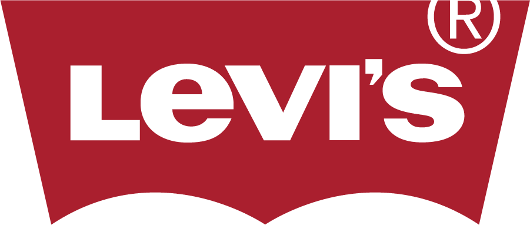
A category everyone assumed was dying
Nobody asked me to do this. The planning conversation around wallets had quietly become a conversation about decline, and that assumption was shaping decisions across nine brands.
The logic sounded reasonable. Payments went digital, so wallets must be going away, so the category was something to manage down rather than invest in. I did not believe it, and more importantly, nobody had checked.
So I set out to answer three questions. Is the wallet actually disappearing? If it is not, what is it becoming? And what should each of our nine licensed brands do differently because of the answer?
Research
Payment behaviour and mobile ID adoption.
Categorize
Rebuild the line around how people carry.
Map
Every competitor, including those off our fixture.
Architect
A position and a price ladder per brand.
Present
To sales, management and design.
The wallet is not emptying. It is thinning.
The data did not support the decline story at all. Cash has held flat at roughly 14 percent of payments for two years running, and only 18 percent of mobile wallet users expect to stop carrying a physical wallet.
The real question was never cards. It was identification. Twenty-one states and Puerto Rico now issue a mobile driver’s licence, and more than 250 TSA checkpoints accept a digital ID. That is the headline everyone repeats. The part nobody repeats is that zero states let you legally leave the plastic card at home, and only 7 percent of eligible drivers have enrolled.
That reframed the whole category. The licence is the last thing the phone cannot take, and it will stay that way for years. We are not competing with the phone. We are competing with thickness.
14%
Cash share of payments, flat two years
0
States where the phone replaces the card
7%
Of drivers enrolled in mobile ID
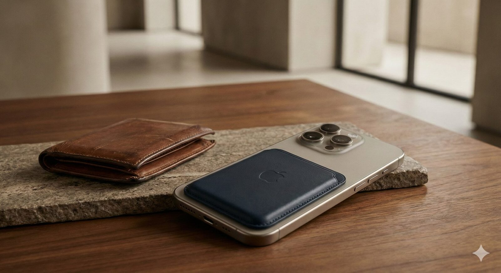
Carry right, not carry less
If the wallet is thinning rather than vanishing, the line should be organised by how much a customer actually carries. It was not. It was organised by construction name, which is a manufacturing idea rather than a shopping one.
I rebuilt the category as a five-part carry ladder, from full carry down to a card holder that attaches to a phone. That let us ask every brand a far sharper question than how many wallets it needed. The question became which rungs of the ladder that brand has permission to stand on.
It is not about carrying less. It is about carrying right.
On the carry ladder
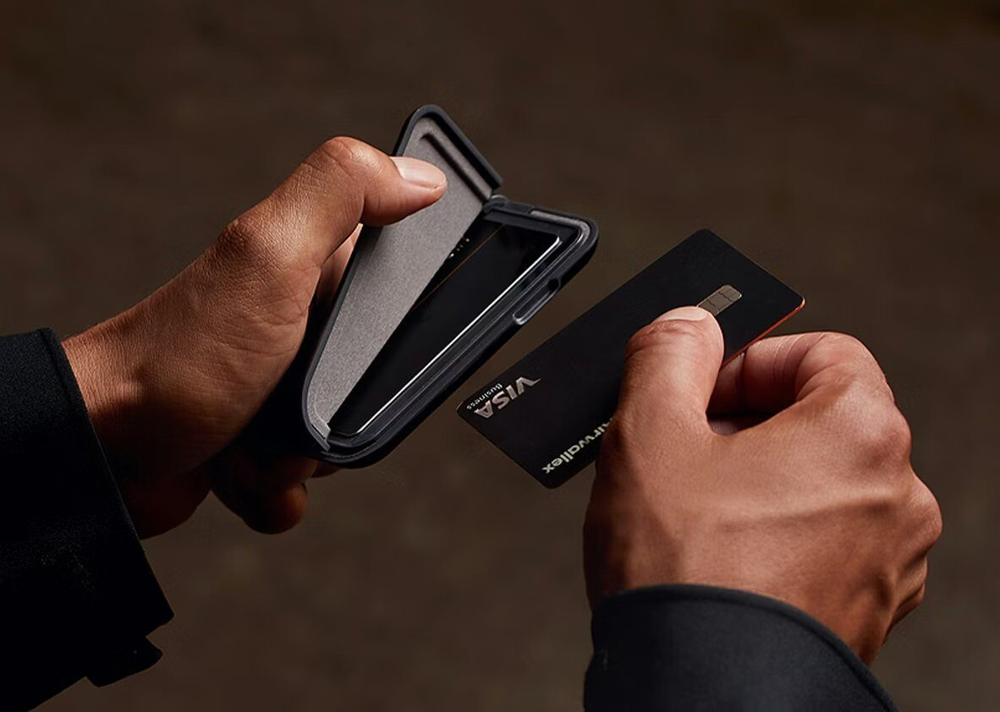
Different doors, different fights
We were benchmarking against the brands hanging beside us and nothing else. That covered about a quarter of the problem.
I mapped four separate competitive sets. Licensed brands on our own fixture, from 46 to 185 dollars, where Fossil and Michael Kors sit. Retailer private label from 18 to 50 dollars, including Goodfellow at Target and Sonoma at Kohl’s. Slim specialist direct-to-consumer brands from 65 to 195 dollars, where Ridge, Bellroy, Ekster and Secrid have taken over the design conversation. And the phone accessory aisle, from 11 to 150 dollars.
That fourth set is the one nobody was counting, and it is the one that matters most. A MagSafe card holder at 30 dollars, sitting twenty feet away in a different department, sets the price a customer already has in mind before they reach our wall. The aisle sets the reference price whether we compete in it or not.
Put all four together and the pressure point is obvious. Our licensed mid band at 42 to 54.50 dollars is squeezed from below by private label and from above by specialists offering a lifetime warranty. One small detail summed up the gap in thinking. Fossil puts RFID in the product name, not on the hangtag, so the feature travels with the product everywhere it is listed. Ours sat on a tag nobody reads.
Brand sets the floor, construction sets the step
A category strategy is worth nothing until each brand knows what to do with it on Monday morning.
I positioned the nine brands along a single line from dress to outdoor, so no two were competing for the same customer. Cole Haan anchors the top as the halo that sets the quality ceiling. Tommy Bahama carries the highest average unit retail on quality without logos. Calvin Klein sits on pure minimal branding, Kenneth Cole on engineered detail you can demonstrate in three seconds, Haggar on elevated finish at an entry price. Tommy Hilfiger is the number one gift driver in the portfolio. Dockers and Levi’s hold the refined casual ground, and Columbia is the only genuinely outdoor brand of the nine.
Then I found the problem that mattered most commercially. Six of the nine brands charged a single price across every construction. A trifold, a slim front pocket and an extra capacity traveller all rang up at the same number. We were telling the customer that construction has no value, which is precisely the opposite of a strategy built on carry type.
I laid out three ways to fix it. Price by construction with one ladder across the whole portfolio, which is easy to merchandise but flattens brand equity. Price by brand with a ladder inside each, which protects the hierarchy but means managing nine separate ladders. Or the one I recommended, where the brand sets the floor and the construction sets the step up from it. It keeps each brand in its lane and still puts a number on the work that goes into a thinner, better built wallet.
The package and the fixture are the sales pitch
Wallets are bought as gifts, and gifts are bought on a calendar. We were planning for one peak when there are clearly two.
Q4 is the obvious one, and it starts earlier than the plan assumed. By early October, 42 percent of holiday shoppers have already started, and on the Saturday before Christmas 158.9 million shoppers are in stores. Father’s Day is the peak that gets treated as leftover Q4 stock, and it should not be. It grew 13.6 percent to a record 27.9 billion dollars, 77 percent of people celebrate it, and 58 percent buy clothing. It needs its own floor set, built to the price band rather than above it, with the boxed set as the format.
The second half of the problem is what happens once the shopper is standing there. Roughly 82 percent of purchase decisions are made inside the store, optimising display location lifts revenue by about 11 percent, and 72 percent of adults say packaging design influences what they buy. Our fixture was working against every one of those numbers. All product sat in closed boxes, so the customer had to open every item to evaluate it. There was no RFID callout, no card capacity, no slim profile claim. Product was arranged by brand rather than by how anyone shops, under a generic Wallets header that disappeared next to the destination brands on either side.
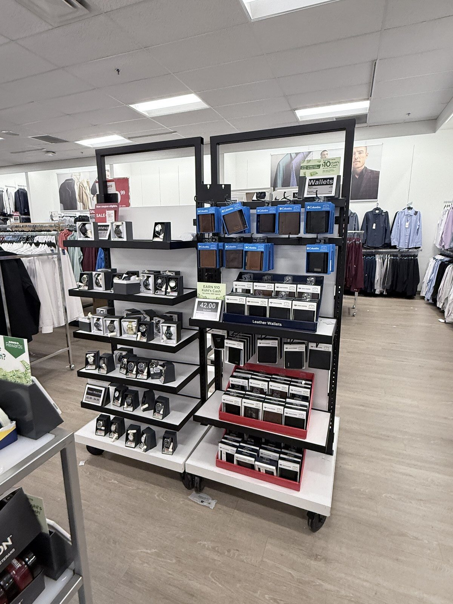
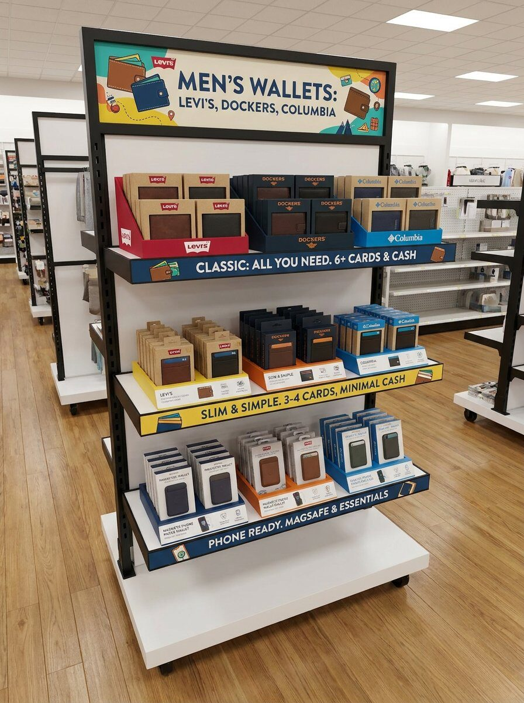
I photographed what good already looked like elsewhere in the same store. Feature icons on phone case shelf cards, rail labels that navigate by need, and branded table signage that turns a table into a destination. None of it was new. It just was not being used on our wall.
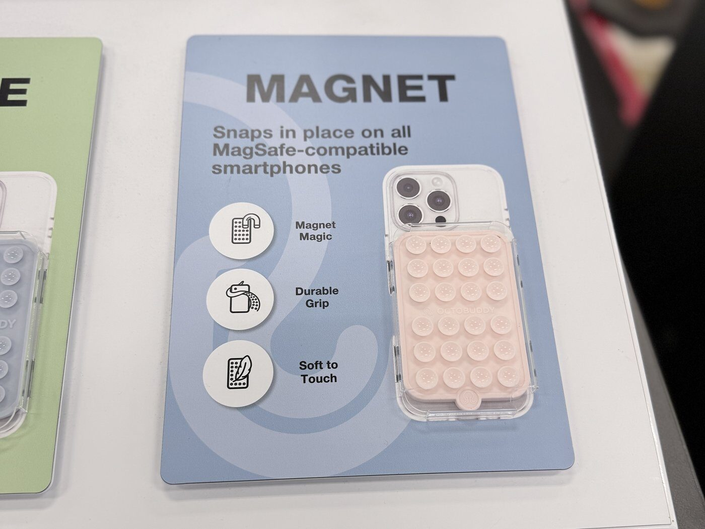
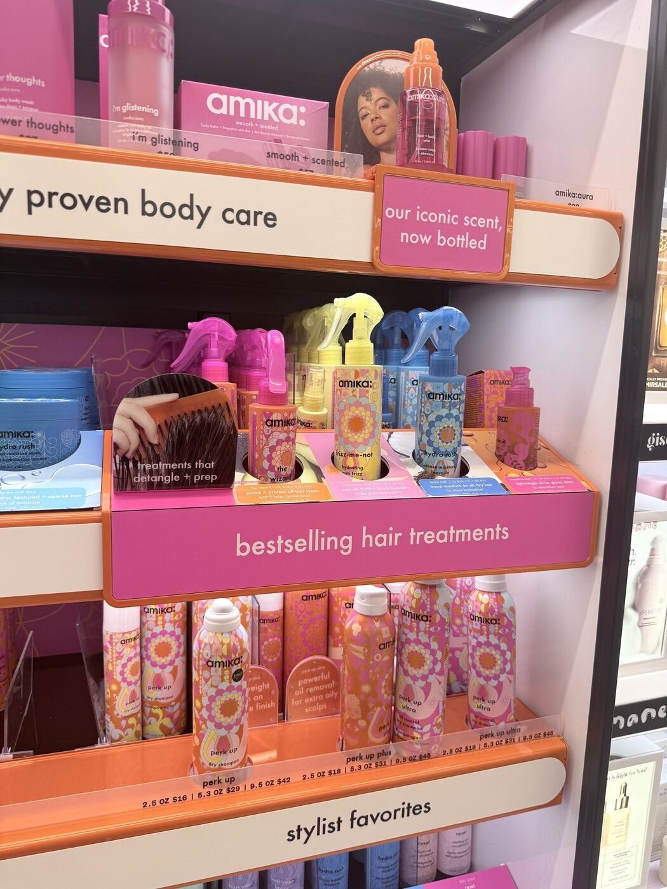
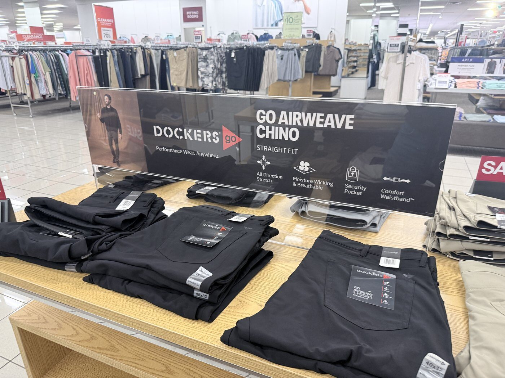
The box is the first thing a gift giver buys. Make it worth buying.
On packaging
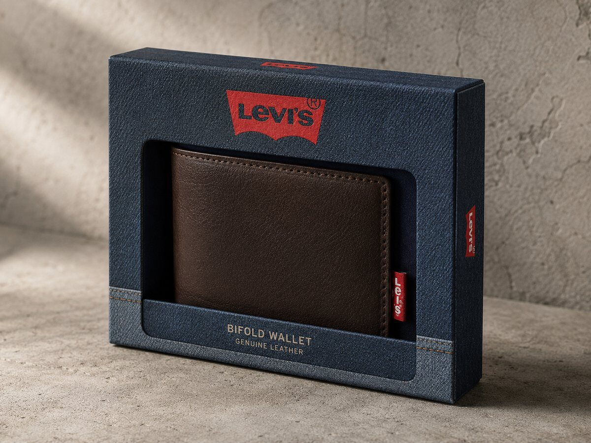
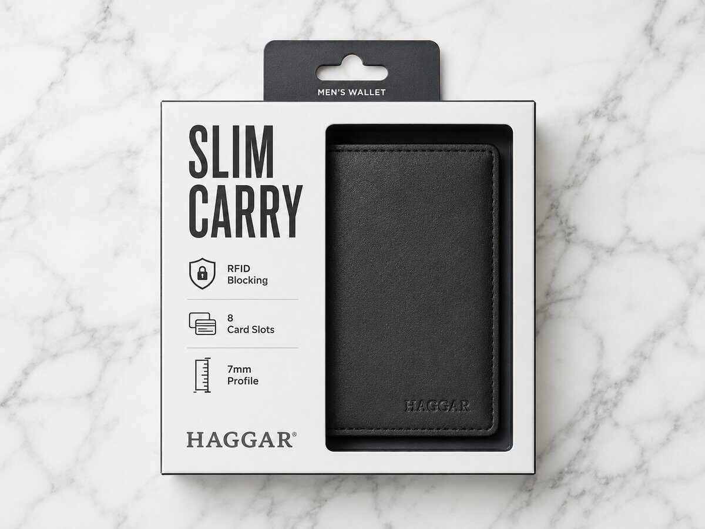
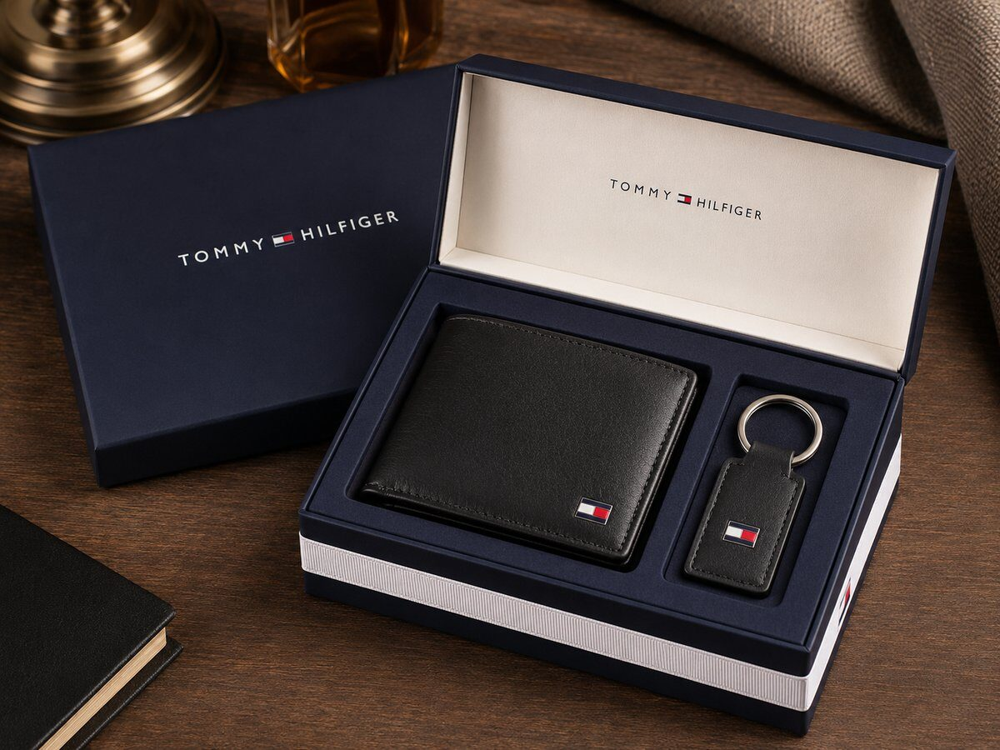
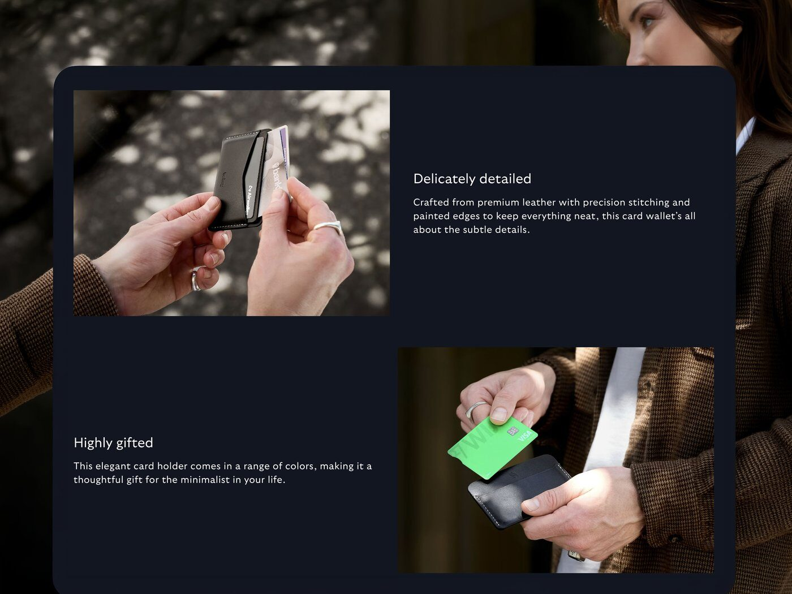
A website, not a deck
A fifty slide deck about why the category needs rethinking is a deck nobody opens twice.
So I built the strategy as a website. Sales could send a link instead of a 40 megabyte attachment that compresses into uselessness. Everyone opened the same current version, on a laptop in a meeting or on a phone in a showroom. When a number changed I changed it once. And the brand architecture could hold a mood board per brand without any of it becoming an appendix nobody reaches.
The format also made the argument. A category strategy about meeting the customer where they actually are should not arrive as a file attachment.
Live view of the strategy site. Scroll inside the frame, or open it full size below.
Men’s Wallet Program Strategy, Fall 2027
A category that got invested in again
I presented this to our sales team, to management and to the design team.
The result was a major push across the brands to design and refresh the wallet business, which is the opposite of where the conversation had been heading six months earlier. Instead of managing a category down, we were rebuilding it.
It also opened a door commercially. We secured a non-branded MagSafe program at Kohl’s, with real enthusiasm on their side for a category strategy that had clearly been thought through. That is the phone companion rung of the carry ladder, sold into the exact retailer whose fixture I had photographed as the problem. The research did not just change what we designed. It changed what we could go and sell.